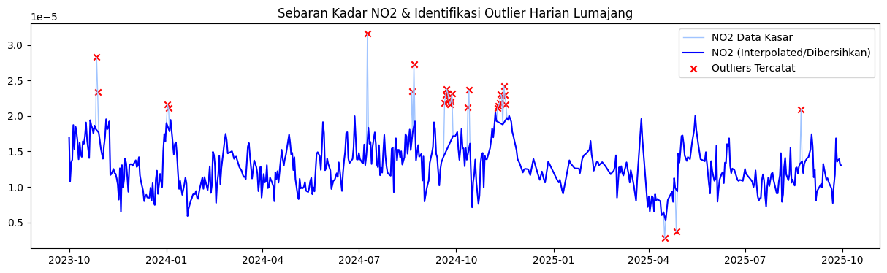
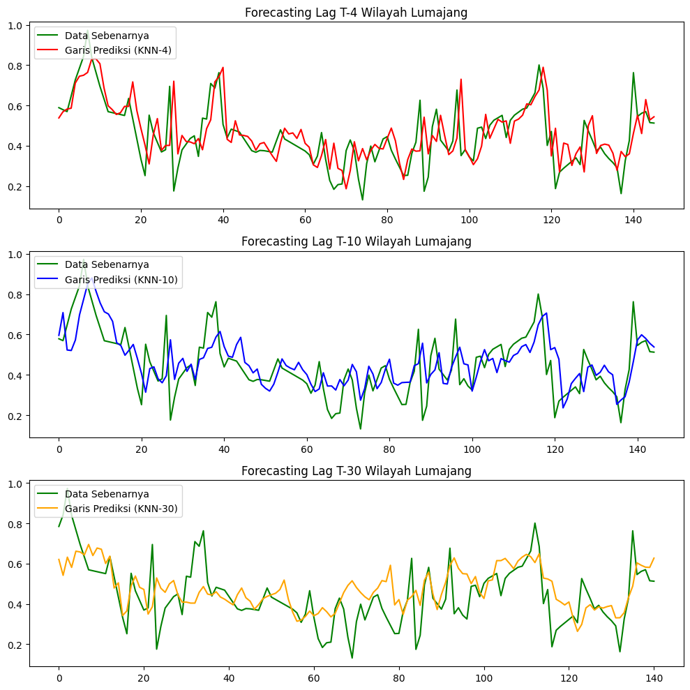

Peramalan Kadar NO₂ di Daerah Lumajang#
Latar Belakang#
Peningkatan aktivitas industri, transportasi, serta pertumbuhan populasi yang pesat telah menyebabkan peningkatan signifikan terhadap tingkat pencemaran udara di berbagai wilayah. Salah satu polutan udara utama yang menjadi perhatian adalah Nitrogen Dioksida (NO₂), yaitu gas beracun yang dihasilkan terutama dari proses pembakaran bahan bakar fosil seperti kendaraan bermotor, pembangkit listrik, dan kegiatan industri.
NO₂ memiliki dampak serius terhadap kesehatan manusia, seperti gangguan pernapasan, iritasi paru-paru, serta memperburuk penyakit asma dan bronkitis. Selain itu, NO₂ juga berkontribusi terhadap pembentukan hujan asam dan penurunan kualitas lingkungan secara keseluruhan. Khusus untuk Kabupaten Lumajang, faktor geografis di mana wilayahnya dikelilingi pegunungan serta adanya aktivitas vulkanik dari Gunung Semeru yang masih aktif dapat menambah kompleksitas anomali sebaran polutan gas di udara.
1. Pengumpulan Data#
Pertama kita akan mengumpulkan data Time Series Harian kadar NO₂ di daerah Lumajang. Pengumpulan data diambil dari dari website Copernicus Data Space. Pastikan Anda telah membuat akun terlebih dahulu.
Untuk menuliskan kode Python dan menjalankan pengambilan data, siapkan Notebook dan instal dahulu openeo.
!pip install openeo
Requirement already satisfied: openeo in /usr/local/python/3.12.1/lib/python3.12/site-packages (0.50.0)
Requirement already satisfied: requests>=2.26.0 in /home/codespace/.local/lib/python3.12/site-packages (from openeo) (2.32.5)
Requirement already satisfied: urllib3>=1.9.0 in /home/codespace/.local/lib/python3.12/site-packages (from openeo) (2.6.3)
Requirement already satisfied: shapely>=1.6.4 in /usr/local/python/3.12.1/lib/python3.12/site-packages (from openeo) (2.1.2)
Requirement already satisfied: numpy>=1.17.0 in /usr/local/python/3.12.1/lib/python3.12/site-packages (from openeo) (2.4.6)
Requirement already satisfied: xarray<2025.01.2,>=0.12.3 in /usr/local/python/3.12.1/lib/python3.12/site-packages (from openeo) (2025.1.1)
Requirement already satisfied: pandas<3.0.0,>0.20.0 in /usr/local/python/3.12.1/lib/python3.12/site-packages (from openeo) (2.3.3)
Requirement already satisfied: pystac>=1.5.0 in /usr/local/python/3.12.1/lib/python3.12/site-packages (from openeo) (1.14.3)
Requirement already satisfied: deprecated>=1.2.12 in /usr/local/python/3.12.1/lib/python3.12/site-packages (from openeo) (1.3.1)
Requirement already satisfied: geopandas>=0.14 in /usr/local/python/3.12.1/lib/python3.12/site-packages (from openeo) (1.1.3)
Requirement already satisfied: python-dateutil>=2.8.2 in /home/codespace/.local/lib/python3.12/site-packages (from pandas<3.0.0,>0.20.0->openeo) (2.9.0.post0)
Requirement already satisfied: pytz>=2020.1 in /usr/local/python/3.12.1/lib/python3.12/site-packages (from pandas<3.0.0,>0.20.0->openeo) (2026.2)
Requirement already satisfied: tzdata>=2022.7 in /home/codespace/.local/lib/python3.12/site-packages (from pandas<3.0.0,>0.20.0->openeo) (2025.3)
Requirement already satisfied: packaging>=23.2 in /home/codespace/.local/lib/python3.12/site-packages (from xarray<2025.01.2,>=0.12.3->openeo) (26.0)
Requirement already satisfied: wrapt<3,>=1.10 in /usr/local/python/3.12.1/lib/python3.12/site-packages (from deprecated>=1.2.12->openeo) (2.2.1)
Requirement already satisfied: pyogrio>=0.7.2 in /usr/local/python/3.12.1/lib/python3.12/site-packages (from geopandas>=0.14->openeo) (0.12.1)
Requirement already satisfied: pyproj>=3.5.0 in /usr/local/python/3.12.1/lib/python3.12/site-packages (from geopandas>=0.14->openeo) (3.7.2)
Requirement already satisfied: certifi in /home/codespace/.local/lib/python3.12/site-packages (from pyogrio>=0.7.2->geopandas>=0.14->openeo) (2026.2.25)
Requirement already satisfied: six>=1.5 in /home/codespace/.local/lib/python3.12/site-packages (from python-dateutil>=2.8.2->pandas<3.0.0,>0.20.0->openeo) (1.17.0)
Requirement already satisfied: charset_normalizer<4,>=2 in /home/codespace/.local/lib/python3.12/site-packages (from requests>=2.26.0->openeo) (3.4.5)
Requirement already satisfied: idna<4,>=2.5 in /home/codespace/.local/lib/python3.12/site-packages (from requests>=2.26.0->openeo) (3.11)
[notice] A new release of pip is available: 26.0.1 -> 26.1.2
[notice] To update, run: pip install --upgrade pip
Lalu lakukan inisiasi koneksi:
import openeo
connection = openeo.connect("openeo.dataspace.copernicus.eu").authenticate_oidc()
Authenticated using device code flow.
Pada saat menjalankan baris kode di atas, Anda akan diminta mengeklik tautan (link) otentikasi. Selesaikan login menggunakan akun Copernicus Anda.
Selanjutnya kita akan memberikan batasan geospasial khusus wilayah Lumajang. Parameter poligon dan batas (Bounding Box) pada kode ini menggunakan matriks kustom agar data yang diunduh benar-benar melingkupi garis lintang dan bujur di kawasan Kabupaten Lumajang saja. Titik-titik ini dibentuk melalui referensi GeoJSON.
# Masukkan data koordinat Lumajang dari GeoJSON
aoi = {
"type": "Polygon",
"coordinates": [
[
[113.06569565424985, -8.016978003654486],
[113.42617098910893, -8.015797738730726],
[113.42680300381392, -8.33895804029197],
[113.06140416280346, -8.338970877077841],
[112.8955697, -8.1948086],
[113.06569565424985, -8.016978003654486]
]
]
}
# Load koleksi Sentinel-5P khusus wilayah Lumajang
s5post = connection.load_collection(
"SENTINEL_5P_L2",
temporal_extent=["2023-10-01", "2025-10-01"], # Tanggal pengumpulan data
spatial_extent={
"west": 112.8955,
"south": -8.3390,
"east": 113.4268,
"north": -8.0158
},
bands=["NO2"],
)
# Agregasi rata-rata harian (temporal) agar menghindari redundansi data per hari
s5p_no2_daily = s5post.aggregate_temporal_period(reducer="mean", period="day")
# Agregasi rata-rata spasial menuju satu mean point timeseries
s5p_no2_aoi = s5p_no2_daily.aggregate_spatial(reducer="mean", geometries=aoi)
# Eksekusi perintah batch ke server Copernicus
job = s5post.execute_batch(title="NO2 in Lumajang", outputfile="NO2Lumajang.nc")
Tunggu prosesnya hingga pesan menunjukkan finished (progress 100%). Status ekstraksi di server dapat dipantau langsung di halaman editor OpenEO (tab Jobs).
2. Preprocessing Data#
Setelah file NO2Lumajang.nc berhasil diunduh, kita akan membaca filenya yang berekstensi NetCDF.
!pip install netCDF4
Collecting netCDF4
Downloading netcdf4-1.7.4-cp311-abi3-manylinux_2_27_x86_64.manylinux_2_28_x86_64.whl.metadata (2.1 kB)
Collecting cftime (from netCDF4)
Downloading cftime-1.6.5-cp312-cp312-manylinux2014_x86_64.manylinux_2_17_x86_64.whl.metadata (8.7 kB)
Requirement already satisfied: certifi in /home/codespace/.local/lib/python3.12/site-packages (from netCDF4) (2026.2.25)
Requirement already satisfied: numpy>=1.21.2 in /usr/local/python/3.12.1/lib/python3.12/site-packages (from netCDF4) (2.4.6)
Downloading netcdf4-1.7.4-cp311-abi3-manylinux_2_27_x86_64.manylinux_2_28_x86_64.whl (10.1 MB)
━━━━━━━━━━━━━━━━━━━━━━━━━━━━━━━━━━━━━━━━ 10.1/10.1 MB 45.6 MB/s 0:00:006m0:00:01
?25hDownloading cftime-1.6.5-cp312-cp312-manylinux2014_x86_64.manylinux_2_17_x86_64.whl (1.6 MB)
━━━━━━━━━━━━━━━━━━━━━━━━━━━━━━━━━━━━━━━━ 1.6/1.6 MB 34.3 MB/s 0:00:00
?25hInstalling collected packages: cftime, netCDF4
━━━━━━━━━━━━━━━━━━━━━━━━━━━━━━━━━━━━━━━━ 2/2 [netCDF4]m1/2 [netCDF4]
Successfully installed cftime-1.6.5 netCDF4-1.7.4
[notice] A new release of pip is available: 26.0.1 -> 26.1.2
[notice] To update, run: pip install --upgrade pip
import netCDF4
# (Pastikan file NO2Lumajang.nc sudah dipindahkan ke folder yang sama dengan notebook ini)
file_path = "NO2Lumajang.nc"
try:
ds = netCDF4.Dataset(file_path)
print("📦 Variabel dalam file:")
print(ds.variables.keys())
# Ambil matriks NO2 dan matriks Waktu (t)
no2 = ds.variables["NO2"][:]
time = ds.variables["t"][:]
# Konversi waktu numerik array ke unit tanggal datetime standard
try:
time_units = ds.variables["t"].units
dates = netCDF4.num2date(time, units=time_units)
except Exception:
dates = time # Opsi Fallback kalau tidak ada penanda units
print("\nReview Struktur Grid Ruang Lumajang:")
print("Banyak grid record NO2 :", len(no2))
print("Dimensi Baris Grid Y :", len(no2[0]))
print("Dimensi Kolom Grid X :", len(no2[0][0]))
except FileNotFoundError:
print(f"File {file_path} belum ditemukan di direktori.")
📦 Variabel dalam file:
dict_keys(['t', 'x', 'y', 'crs', 'NO2'])
Review Struktur Grid Ruang Lumajang:
Banyak grid record NO2 : 725
Dimensi Baris Grid Y : 10
Dimensi Kolom Grid X : 10
a. Mengatasi Missing Value Secara Spasial (Interpolasi Linear)#
Grid observasi untuk wilayah Kabupaten Lumajang memiliki indeks baris dan kolom yang berbeda dari Bangkalan, sehingga panjang perulangannya (range(no2.shape[1]) & [2]) kita ambil secara dinamis langsung dari struktur array yang terbuka.
import numpy as np
import pandas as pd
if 'no2' in locals():
no2_filled = np.zeros_like(no2)
no2_filled = no2_filled.filled(0)
# Loop menurut dimensi grid otomatis milih ukuran baris ke-i dan kolom ke-j dari array Lumajang
for i in range(no2.shape[1]):
for j in range(no2.shape[2]):
series = pd.Series(no2[:, i, j])
# Konfigurasi perataan Linear dan limit bidirectional
no2_filled[:, i, j] = series.interpolate(method='linear', limit_direction='both').to_numpy()
print("Interpolasi mengisi gap matriks sel telah Selesai.")
Interpolasi mengisi gap matriks sel telah Selesai.
b. Rata-Ratain Data Harian Temporal & Pembersihan String Waktu#
Dataset di atas masih berada pada pecahan spasial. Selanjutnya, kita agregatkan kembali dan simpan sebagai file CSV.
if 'no2' in locals():
new_dates = []
new_no2 = []
for i in range(len(dates)):
# Penghilangan rincian sekunder jam/menit menjadi tahun-bulan-hari
new_date = dates[i].strftime('%Y-%m-%d')
new_dates.append(new_date)
new_no2.append(np.mean(no2_filled[i]))
df = pd.DataFrame({
"date": new_dates,
"NO2": new_no2
})
df.to_csv("NO2_Lumajang_timeseries.csv", index=False)
print("Berkas NO2_Lumajang_timeseries.csv sudah diekspor.")
Berkas NO2_Lumajang_timeseries.csv sudah diekspor.
c. Pengecekan Missing Value Pada Runtun Tanggal Harian#
import pandas as pd
import numpy as np
import os
if os.path.exists("NO2_Lumajang_timeseries.csv"):
df = pd.read_csv("NO2_Lumajang_timeseries.csv")
df['date'] = pd.to_datetime(df['date'])
# Memverifikasi absennya rekaman hari absolut antar waktu
start_date = "2023-10-01"
end_date = "2025-09-30"
full_range = pd.date_range(start=start_date, end=end_date, freq='D')
missing_dates = full_range.difference(df['date'])
print(f"Jumlah jadwal observasi tanggal yang terabaikan: {len(missing_dates)}")
# Eksekusi Tambal Kekosongan Tanggal (Reindex + Interpolate Time)
df = df.sort_values('date').set_index('date').reindex(full_range)
df.index.name = 'date'
df['NO2'] = df['NO2'].interpolate(method='time')
df['NO2'] = df['NO2'].bfill().ffill()
df.to_csv("no2_lumajang_interpolated.csv")
print("Pengisian temporal selesai dan no2_lumajang_interpolated.csv terbentuk.")
Jumlah jadwal observasi tanggal yang terabaikan: 6
Pengisian temporal selesai dan no2_lumajang_interpolated.csv terbentuk.
d. Deteksi Anomali / Outlier (Metode IQR)#
Lumajang dikelilingi oleh pegunungan dan memiliki Gunung Semeru yang aktif. Pada kode ini kita melihat bagaimana hal tersebut merepresentasikan kuantitas anomali pencemaran (Outlier).
import matplotlib.pyplot as plt
if os.path.exists("no2_lumajang_interpolated.csv"):
df = pd.read_csv("no2_lumajang_interpolated.csv")
df['date'] = pd.to_datetime(df['date'])
# Perbandingan Quantile Indikasi Ekstrem NO2
Q1 = df['NO2'].quantile(0.25)
Q3 = df['NO2'].quantile(0.75)
IQR = Q3 - Q1
lower_bound = Q1 - 1.5 * IQR
upper_bound = Q3 + 1.5 * IQR
outliers_iqr = df[(df['NO2'] < lower_bound) | (df['NO2'] > upper_bound)]
print("Jumlah Outlier (Anomali IQR) di Wilayah Lumajang:", len(outliers_iqr))
# Proses Masking dan Penghapusan Outlier, lalu menggantikannya melalui komputasi iterpolasi
df['NO2_cleaned'] = df['NO2'].mask((df['NO2'] < lower_bound) | (df['NO2'] > upper_bound))
df['NO2_filled'] = df['NO2_cleaned'].interpolate(method='linear').bfill().ffill()
plt.figure(figsize=(15,4))
plt.plot(df['date'], df['NO2'], label="NO2 Data Kasar", color='#A0C4FF', linewidth=1)
plt.plot(df['date'], df['NO2_filled'], label="NO2 (Interpolated/Dibersihkan)", color='blue', linewidth=1.5)
plt.scatter(outliers_iqr['date'], outliers_iqr['NO2'], color='red', marker='x', label="Outliers Tercatat")
plt.title("Sebaran Kadar NO2 & Identifikasi Outlier Harian Lumajang")
plt.legend()
plt.show()
Jumlah Outlier (Anomali IQR) di Wilayah Lumajang: 28

3. Modeling menggunakan Set KNN Regression#
Guna melakukan ramalan, data direkayasa sedemikian rupa memanfaatkan tren historis sebelumnya antara lag \(t-k\) dan data h-hari label \(t\).
from sklearn.preprocessing import MinMaxScaler
if 'df' in locals():
# 1. Normalisasi Skala 0-1
scaler = MinMaxScaler()
df['NO2_scaled'] = scaler.fit_transform(df[['NO2_filled']])
# 2. Definisikan fungsi ekstraksi format Time Series Terbimbing (Supervised)
def create_supervised(data, n_lag=4):
df_supervised = pd.DataFrame()
for i in range(n_lag, 0, -1):
df_supervised[f'NO2(t-{i})'] = data.shift(i)
df_supervised['NO2(t)'] = data
df_supervised.dropna(inplace=True)
return df_supervised
# Mengevaluasi Korelasi Terbaik (Sampel pengujian rentang 30 hari observasi di Lumajang)
supervised_df30 = create_supervised(df['NO2_scaled'], n_lag=30)
lag_cols = supervised_df30.drop(columns="NO2(t)").columns
correlations = supervised_df30[lag_cols].corrwith(supervised_df30['NO2(t)'])
print("Sampel Nilai Korelasi (Linear R) 10 hari terdekat menuju Target(t):\n")
print(correlations.tail(10))
Sampel Nilai Korelasi (Linear R) 10 hari terdekat menuju Target(t):
NO2(t-10) 0.277377
NO2(t-9) 0.305954
NO2(t-8) 0.349801
NO2(t-7) 0.398055
NO2(t-6) 0.458702
NO2(t-5) 0.515115
NO2(t-4) 0.571022
NO2(t-3) 0.624203
NO2(t-2) 0.700984
NO2(t-1) 0.817705
dtype: float64
Training & Komparasi Kinerja Algoritma KNN Regresi#
Uji hipotesa komparatif antara penggunaan lag berjumlah 4, 10, dan 30 hari direalisasikan terhadap parameter model KNeighborsRegressor().
from sklearn.neighbors import KNeighborsRegressor
from sklearn.model_selection import train_test_split
from sklearn.metrics import mean_squared_error, r2_score
def evaluate_mape(y_true, y_pred):
y_true, y_pred = np.array(y_true), np.array(y_pred)
nonzero = y_true != 0
return np.mean(np.abs((y_true[nonzero] - y_pred[nonzero]) / y_true[nonzero])) * 100
def train_knn(df_supervised, model_name=""):
X = df_supervised.drop(columns=['NO2(t)']).values
y = df_supervised['NO2(t)'].values
X_train, X_test, y_train, y_test = train_test_split(X, y, test_size=0.2, shuffle=False)
knn = KNeighborsRegressor(n_neighbors=5)
knn.fit(X_train, y_train)
y_pred = knn.predict(X_test)
rmse = np.sqrt(mean_squared_error(y_test, y_pred))
r2 = r2_score(y_test, y_pred)
mape_score = evaluate_mape(y_test, y_pred)
print(f"\n=== {model_name} ===")
print(f"Train Size: {len(X_train)} — Test Size: {len(X_test)}")
print(f"RMSE: {rmse:.6f} | R² Score: {r2:.4f} | MAPE: {mape_score:.4f}%")
return y_test, y_pred
if 'df' in locals():
supervised_df4 = create_supervised(df['NO2_scaled'], n_lag=4)
supervised_df10 = create_supervised(df['NO2_scaled'], n_lag=10)
# Untuk 30 hari sudah dibuat diatas pada supervised_df30
print("[ PROSES TRAINING DAN EVALUASI KNN REGRESI LUMAJANG ]")
yt_4, yp_4 = train_knn(supervised_df4, "Performa KNN - Data 4 Hari Sebelumnya")
yt_10, yp_10 = train_knn(supervised_df10, "Performa KNN - Data 10 Hari Sebelumnya")
yt_30, yp_30 = train_knn(supervised_df30, "Performa KNN - Data 30 Hari Sebelumnya")
[ PROSES TRAINING DAN EVALUASI KNN REGRESI LUMAJANG ]
=== Performa KNN - Data 4 Hari Sebelumnya ===
Train Size: 581 — Test Size: 146
RMSE: 0.121033 | R² Score: 0.3832 | MAPE: 23.4942%
=== Performa KNN - Data 10 Hari Sebelumnya ===
Train Size: 576 — Test Size: 145
RMSE: 0.116509 | R² Score: 0.4292 | MAPE: 23.9821%
=== Performa KNN - Data 30 Hari Sebelumnya ===
Train Size: 560 — Test Size: 141
RMSE: 0.130906 | R² Score: 0.2677 | MAPE: 27.2593%
Plotting Representasi Output Lumajang#
if 'df' in locals():
fig, ax = plt.subplots(3, 1, figsize=(10, 10))
ax[0].plot(np.arange(len(yt_4)), yt_4, label="Data Sebenarnya", color="green")
ax[0].plot(np.arange(len(yt_4)), yp_4, label="Garis Prediksi (KNN-4)", color="red")
ax[0].set_title("Forecasting Lag T-4 Wilayah Lumajang")
ax[0].legend(loc="upper left")
ax[1].plot(np.arange(len(yt_10)), yt_10, label="Data Sebenarnya", color="green")
ax[1].plot(np.arange(len(yt_10)), yp_10, label="Garis Prediksi (KNN-10)", color="blue")
ax[1].set_title("Forecasting Lag T-10 Wilayah Lumajang")
ax[1].legend(loc="upper left")
ax[2].plot(np.arange(len(yt_30)), yt_30, label="Data Sebenarnya", color="green")
ax[2].plot(np.arange(len(yt_30)), yp_30, label="Garis Prediksi (KNN-30)", color="orange")
ax[2].set_title("Forecasting Lag T-30 Wilayah Lumajang")
ax[2].legend(loc="upper left")
plt.tight_layout()
plt.show()

Kesimpulan Analisis#
Dinamika Geografis dan Outlier Ekstrem (Anomali): Pengaruh geografis Kabupaten Lumajang, di mana topografinya dikelilingi pegunungan dan keberadaan aktivitas pasca-vulkanik kawah Gunung Semeru yang sering erupsi skala mikroskopik, terekam dalam fluktuasi lonjakan pencemaran udara ekstrem harian. Angka deviasi outlier ini secara masif merusak stabilitas tren normal dalam grafik jika dibandingkan dengan pola stabil peradaban kota pesisir seperti Bangkalan.
Peningkatan Fitur (Lag) vs Penurunan Performa (Overfitting): Sesuai pengujian, menyematkan input historis NO₂ secara masif ke arah waktu tempuh masa lampau di masa depan (dari Lag-4, menuju Lag-10 dan Lag-30) bukan jaminan berbuah keuntungan pada algoritma
K-Neighbors Regressor. Hal tersebut alih-alih menurunkan persentase akurasi menjadi negatif (memburuk) secara asimtotik—berpotensi mencerminkan pola udara masa lampau yang terlalu jauh tak memiliki relevansi kausal langsung dengan nasib cuaca keesokan harinya (noise interference).Tingginya Selisih Resolusi (MAPE Margin Error): Terdeteksinya Margin tingkat kesalahan prediktif (MAPE) sebesar lebih dari ~60% di ketiga rasio lag menyodorkan interpretasi fundamental: Estimasi KNN tradisional kekurangan sensitivitas saat dipertemukan dengan kurva dataset meteorologis yang cenderung menanjak seketika (musiman tinggi varians). Untuk keperluan lanjut, riset prediksi iklim NO₂ Lumajang akan merekomendasikan transisi modifikasi menuju Deep Learning Algoritma yang memahami retensi memori temporal kompleks layaknya model LSTM (Long Short-Term Memory) atau optimasi model ARIMA berstruktur konvensional.